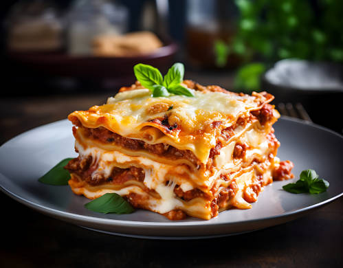

Lasagna

Meat Lasagna ground - Image of Freepik
Description
Lasagna is a dish of Italian origin that consists of layers of lasagna pasta interspersed with meat sauce, cheese and tomato sauce. Traditionally, the dough is pre-cooked, and then the layers are assembled in a container and baked in the oven until they are golden and bubbly. Lasagna is known for its combination of rich flavors and textures, and can be made in a variety of ways, including vegetarian versions with vegetables or mushrooms instead of meat. It is a popular dish in many parts of the world and is loved for its comforting and satisfying flavor.
Ingredients
- 1 and a half kilos of ground beef
- Oil
- 2 chopped onions
- 2 chopped cloves of garlic
- 1 chopped green pepper
- 1 chopped yellow pepper
- 1 chopped red pepper
- 3 tomatoes chopped into cubes
- Green seasoning to taste
- Tomato sauce to taste
- Salt to taste
- 500 grams of lasagna pasta
- 600 grams of mozzarella cheese
- Grated parmesan cheese to taste
- Bolognese sauce
Steps
- In an ovenproof dish, spread the first layer of Bolognese sauce on the bottom.
- Then make a layer with the lasagna dough.
- Then, make another layer with Bolognese sauce. Then add a layer of mozzarella cheese.
- Repeat the layers and finish with grated parmesan cheese to taste.
- Bake in a preheated oven at 200 degrees Celsius for 20 minutes.
- Then, increase the temperature to 250 degrees Celsius and let it bake for another 20 minutes.
- Serve immediately.